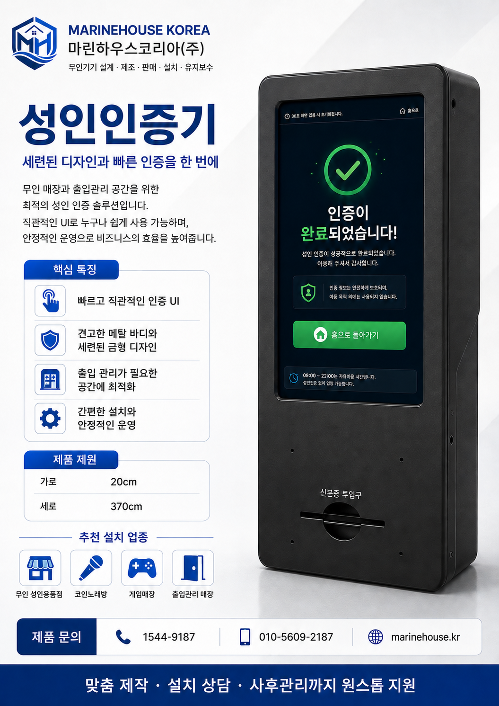

무인기기 전문기업 마린하우스코리아(주)가 성인 전용 매장의 출입 관리와 신분 확인을 지원하는 ‘무인 성인인증 키오스크·출입문 관리 시스템’을 새롭게 출시했다고 밝혔다.
이번에 선보인 시스템은 매장 입구에서 방문객의 성인 여부를 확인한 후 출입문을 제어하는 방식으로, 관리자가 상주하지 않는 무인매장에서도 체계적인 출입 관리가 가능하도록 설계됐다.
신제품은 성인인증 키오스크와 출입문 제어 시스템을 연동해 이용자가 인증 절차를 완료하면 출입문이 열리는 구조다. 매장 운영자는 반복적인 신분 확인 업무를 줄일 수 있으며, 심야시간이나 무인 운영시간에도 보다 효율적으로 매장을 관리할 수 있다.
특히 업종과 매장 환경에 따라 키오스크 외관과 사용자 화면을 맞춤 구성할 수 있으며, 기존 출입문과의 연동 여부도 현장 조건에 맞춰 상담할 수 있다. 신규 매장뿐 아니라 이미 운영 중인 매장에도 설치를 검토할 수 있도록 제작됐다.
마린하우스코리아 관계자는 “성인 전용 무인매장이 늘어나면서 단순 결제 시스템을 넘어 출입 단계에서 이용자를 확인하고 관리할 수 있는 장비에 대한 문의가 증가하고 있다”며 “이번 제품은 성인인증과 출입문 관리를 하나의 시스템으로 연결해 매장 운영의 편의성을 높이는 데 초점을 맞췄다”고 설명했다.
마린하우스코리아는 무인기기 설계와 제조, 판매, 설치, 유지보수를 진행하는 기업으로, 인형뽑기 기기, 가챠 기기, 키오스크, 진열장 등 다양한 무인 운영 장비를 공급하고 있다.
회사는 향후 매장별 운영 방식과 설치 환경을 고려한 맞춤형 성인인증 시스템을 확대하고, 설치 이후 유지관리와 사후지원 체계도 함께 강화할 계획이다.